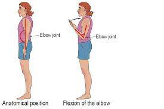
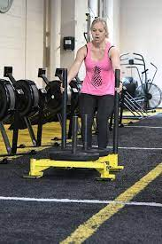

The most common injuries in Baseball occur at the Shoulders, Elbows, Wrists and the Knees. Common injuries for Baseball
include: Torn Labrum, Rotator Cuff Injuries, Dead Arm, UCL Elbow injury, Pitchers Elbow and ACL injuries.
Shoulder and Elbow Injuries:
For shoulder injuries we strongly recommend to strengthen the muscles and tendons around the shoulders through deep range of motion

Elbow Flexion: Stand tall with your weight even distributed. Keep your elbow close to your side and slowly bring the weight up to your shoulder. Hold for 2 seconds. Repeat for 3 sets, 8 reps each.
Elbow Extension: Stand tall with your weight even distributed. Raise your arm and bend your elbow with the weight behind your head. Support by placing
opposite hand on upper arm. Slowly straighten the elbow and bring the weight overhead. Hold for 2 seconds. Slowly lower your arm behing your head and repeat. This should be don in 3 sets with 8 reps each.
ACL Tear:
For ACL tears we strongly recommend to strengthen the muscles and tendons around the knee through deep range of motion

Backwards Sled: Go until you feel a burn in the quadtricep muscles located above knee and work through it, 1-2 Times a week
VMO Squat: Elevate the heels on a surface and perform squats so that the knee can travel over the toes, 2-3 sets of 12-15 Reps
progressively increasing the weight as you get more comfortable.